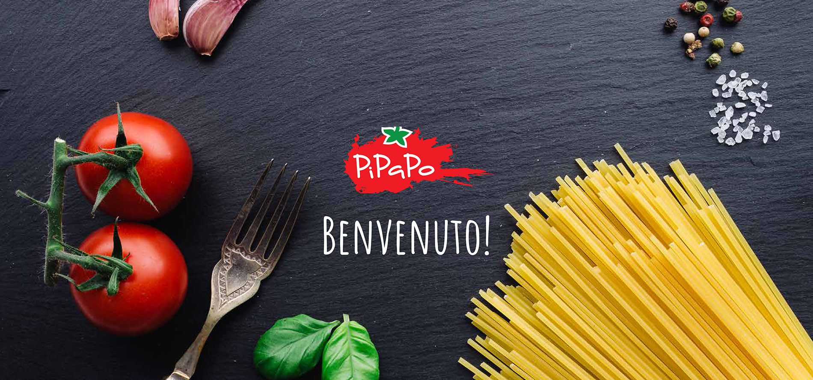

PIPAPO JETZT AUCH IN GRAZ!
Die Vielfalt der italienischen Küche preisgünstig genießen.
Unser neues Marktrestaurant mit italienischem Flair, leckerem Essen und allem
PiPaPo erwartet Sie im Brauquartier 7 in 8055 Graz.
ÖFFNUNGSZEITEN
MO bis SO von 10:30 bis 22:00 Uhr
Wir freuen uns auf ihren Besuch!
Gerne können sie ihre Speisen auch telefonisch bestellen, abholen und zuhause genießen. Ihre Bestellung nehmen wir unter der TelNr. 0316 / 244913 gerne entgegen